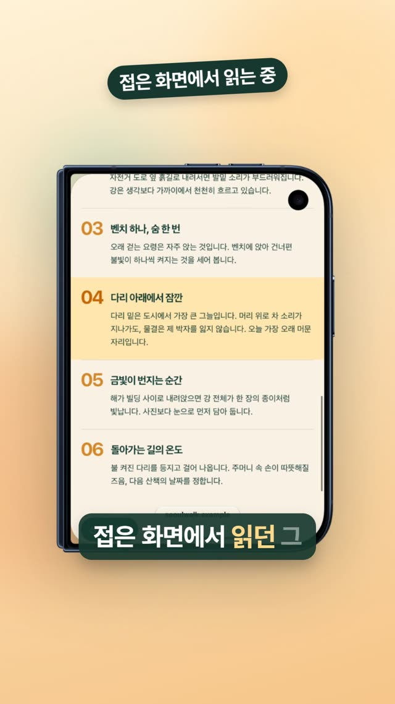
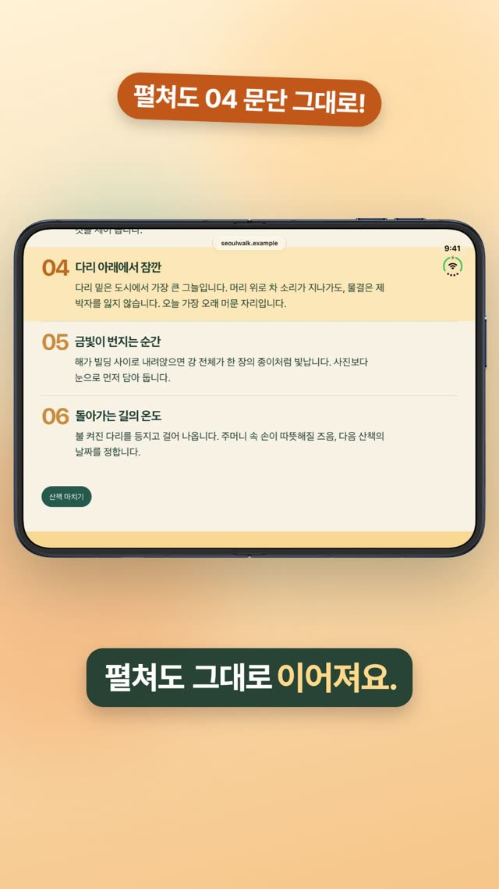

접어서 읽다 펼쳐도 읽던 문단 그대로
접은 화면으로 긴 글을 읽다가 넓게 보려고 펼쳤는데, 어디까지 읽었는지 다시 찾아야 할 때가 있습니다. 풀스크린 브라우저는 읽던 자리를 유지합니다.
사용법
1. 접은 화면에서 읽기
접은 상태에서 글을 읽어 내려갑니다.

2. 펼치기
기기를 펼치면 같은 탭이 넓은 화면으로 이어지고, 읽던 문단이 그대로 보입니다.

3. 다시 접기
다시 접어도 같은 문단에서 이어 읽을 수 있습니다.
화면은 시뮬레이터에서 실제 앱을 조작해 녹화한 것입니다. 손가락 표시는 누른 위치를 보여 주는 그래픽입니다.